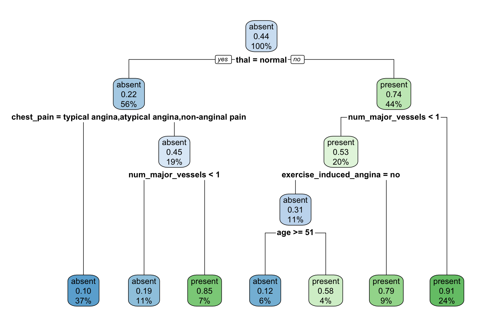
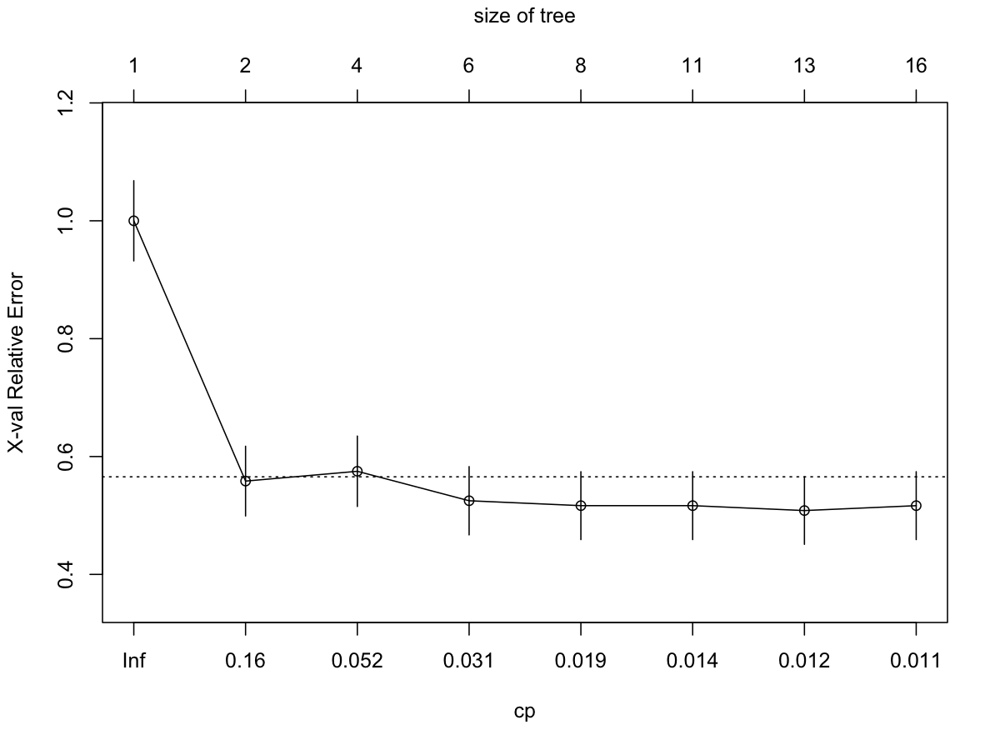
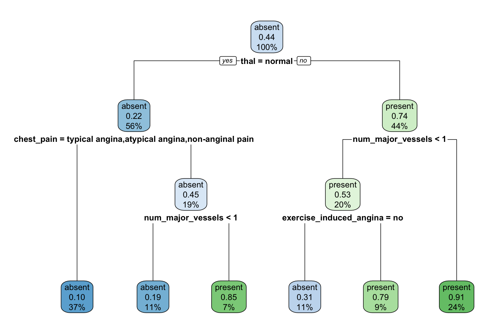
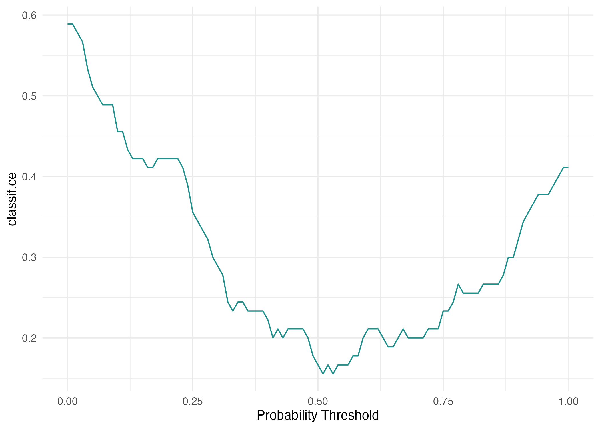
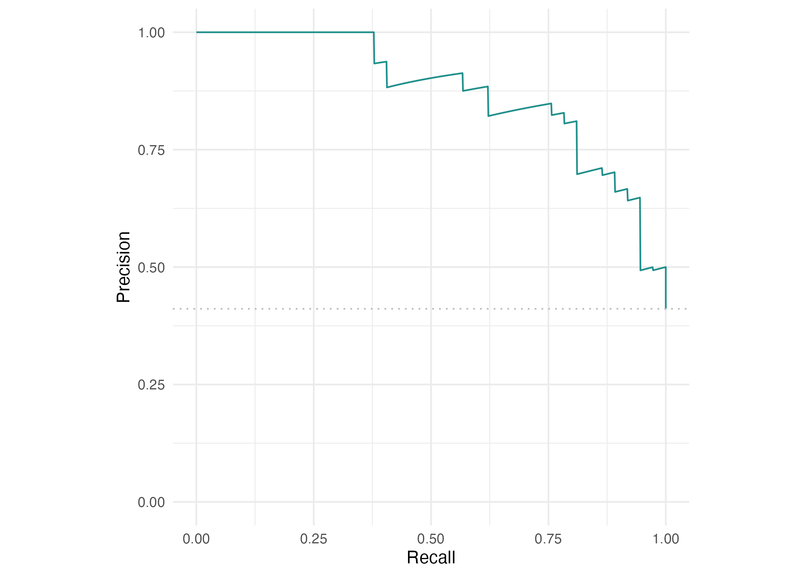

Replicating the heart-disease workflow in Wright et al. (2026)
Author
Federica Gazzelloni
Published
October 23, 2026
From the 28 September 2026 introduction to the article workflow
In Part 1, we explored how learning works and applied it to West Nile surveillance. In this session, we use the heart-disease data from Wright et al. and follow the order of their published examples. Open part2.Rproj and keep this folder as the working directory.
This workshop implements the published examples. Implementation details are documented in the replication record. The frozen data and transformation details are in the data guide.
1. Meet the data
The task is to distinguish existing heart disease from its absence using clinical measurements. This is a classification example, not a future cardiovascular risk score.
There are 270 patients and 13 predictors. The outcome is heart_disease, and present is the positive class. Examine age, chest pain, cholesterol and exercise measurements before discussing what information a learner receives.
2. Fit and prune a tree — article section 2.1.3
The core script follows the tree examples, then continues through evaluation and resampling. Read it section by section in RStudio. The first trees use the complete dataset for illustration, as in the article; their fitted accuracy would not estimate performance on new patients.
Code
# Article sections 2.1, 3.1 and 3.2. Local seeds make this run reproducible.source("R/01-data.R")library(mlr3)library(mlr3learners)library(mlr3viz)set.seed(20261023)# These first trees illustrate fitting and pruning on all observations,# as in the article; they do not estimate generalisation performance.cart <- rpart::rpart(heart_disease ~ ., data = heart)png("figures/01-tree.png", width =1500, height =1000, res =150)rpart.plot::rpart.plot(cart)invisible(dev.off())deep_cart <- rpart::rpart(heart_disease ~ ., data = heart,control = rpart::rpart.control(minsplit =2))png("figures/02-complexity.png", width =1200, height =900, res =150)rpart::plotcp(deep_cart)invisible(dev.off())pruned_cart <- rpart::prune(deep_cart, cp =0.031)png("figures/03-pruned-tree.png", width =1500, height =1000, res =150)rpart.plot::rpart.plot(pruned_cart)invisible(dev.off())

Default classification tree fitted to the complete heart-disease dataset.
Compare the default tree with the deep tree. The complexity plot connects pruning to the balance between fitting the observed sample and generalising beyond it. The article uses cp = 0.031; we retain that value for the replication.

Cross-validated relative error across candidate complexity parameter values.

Classification tree pruned using cp = 0.031.
3. Train a neural network — article section 2.2.3
The network script retains the published 64/32-unit architecture, dropout of 0.4, sigmoid output, Adam learning rate of 0.002, binary cross-entropy, 50 epochs, batches of 32, 20% validation and early stopping with patience 10. The data guide explains how we construct 22 inputs.
Run this after configuring Keras. It is separate from the default render because it needs a Python backend.
Code
# Article section 2.2.3, using the current keras3 interface.source("R/01-data.R")library(mlr3)library(keras3)set_random_seed(20261023)heart_task <-as_task_classif(heart, target ="heart_disease", positive ="present", id ="heart")set.seed(20261023)split <-partition(heart_task, ratio =2/3)# Binary predictors use 0/1; remaining nominal predictors use all indicators.# This explicit reconstruction yields the article's 22 input columns.x_data <- heart[, setdiff(names(heart), "heart_disease")]for (nm inc("sex", "fasting_blood_sugar", "exercise_induced_angina")) { x_data[[nm]] <-as.integer(x_data[[nm]]) -1L}nominal <-names(x_data)[vapply(x_data, is.factor, logical(1))]contrasts_full <-lapply(x_data[nominal], function(x) contrasts(x, contrasts =FALSE))x <-model.matrix(~ . -1, data = x_data, contrasts.arg = contrasts_full)stopifnot(ncol(x) ==22L, all(is.finite(x)))# Added for numerical stability: fit numeric scaling on inner training rows only.# Keras takes the final 20% of supplied training rows for validation.inner_n <-floor(length(split$train) *0.8)fit_rows <- split$train[seq_len(inner_n)]continuous <-names(x_data)[vapply(x_data, is.numeric, logical(1))]continuous <-setdiff(continuous, c("sex", "fasting_blood_sugar", "exercise_induced_angina"))centre <-colMeans(x[fit_rows, continuous, drop =FALSE])spread <-apply(x[fit_rows, continuous, drop =FALSE], 2, sd)stopifnot(all(spread >0))x[, continuous] <-sweep(sweep(x[, continuous, drop =FALSE], 2, centre), 2, spread, "/")y <-as.integer(heart$heart_disease =="present")network <-keras_model_sequential(input_shape =c(22)) |>layer_dense(units =64, activation ="relu") |>layer_dropout(rate =0.4) |>layer_dense(units =32, activation ="relu") |>layer_dropout(rate =0.4) |>layer_dense(units =1, activation ="sigmoid")compile(network, optimizer =optimizer_adam(learning_rate =0.002),loss ="binary_crossentropy", metrics ="accuracy")training <-fit(network, x[split$train, ], y[split$train], epochs =50,batch_size =32, validation_split =0.2, verbose =0,callbacks =list(callback_early_stopping(patience =10, restore_best_weights =TRUE)))prob <-as.numeric(predict(network, x[split$test, ], verbose =0))class <-ifelse(prob >=0.5, "present", "absent")accuracy <-mean(class ==as.character(heart$heart_disease[split$test]))print(accuracy)write.csv(data.frame(row_id = split$test, truth = heart$heart_disease[split$test],probability_present = prob, prediction = class), "outputs/neural-predictions.csv", row.names =FALSE)write.csv(data.frame(accuracy = accuracy), "outputs/neural-accuracy.csv", row.names =FALSE)curves <-data.frame(epoch =seq_along(training$metrics$loss),loss = training$metrics$loss, val_loss = training$metrics$val_loss)write.csv(curves, "outputs/neural-loss.csv", row.names =FALSE)png("figures/05-neural-loss.png", width =1200, height =900, res =150)matplot(curves$epoch, curves[, c("loss", "val_loss")], type ="l", lty =1,col =c("steelblue", "firebrick"), xlab ="Epoch", ylab ="Binary cross-entropy")legend("topright", c("Training", "Validation"), col =c("steelblue", "firebrick"), lty =1)dev.off()capture.output(sessionInfo(), file ="outputs/session-info-neural.txt")
The script saves training and validation loss and the observed test accuracy. The paper’s reported accuracy is not substituted for a local result. When a saved network run is available, its results appear below; these files come from the separate network script, rather than the core notebook render.
accuracy
1 0.8555556
Training and validation binary cross-entropy across 27 training epochs.
4. Evaluate predictions — article section 3.1
We now train a probability-producing random forest on two-thirds of the observations and evaluate it on the remaining third. These are the results of our seeded run.
Code
# The article alternates task and heart_task; use one name consistently.heart_task <-as_task_classif(heart, target ="heart_disease", positive ="present", id ="heart")set.seed(20261023)split <-partition(heart_task, ratio =2/3)write.csv(data.frame(row_id =c(split$train, split$test),subset =rep(c("train", "test"), c(length(split$train), length(split$test)))), "outputs/split.csv", row.names =FALSE)forest <-lrn("classif.ranger", predict_type ="prob", num.threads =1)forest$train(heart_task, row_ids = split$train)forest_pred <- forest$predict(heart_task, row_ids = split$test)measures <-msrs(c("classif.tpr", "classif.tnr", "classif.ppv", "classif.npv", "classif.acc"))print(forest_pred$confusion)
truth
response present absent
present 30 8
absent 7 45
ROC curve for the random-forest holdout predictions.

Classification error across probability thresholds on the holdout set.

Precision-recall curve for the random-forest holdout predictions.
Discuss sensitivity, specificity, positive and negative predictive value, accuracy and the consequences of choosing a threshold. A good score does not establish causation.
5. Resample — article section 3.2
The next examples use a 100-tree forest, 3-fold cross-validation, 100 repeated subsamples and 40 bootstrap repetitions. The core script retains those counts.
Code
# Section 3.2 uses a 100-tree forest, rather than the learner default above.forest100 <-lrn("classif.ranger", predict_type ="prob", num.trees =100, num.threads =1)set.seed(20261024)forest100$train(heart_task, row_ids = split$train)auc <-msr("classif.auc")auc_by_subset <-data.frame(subset =c("train", "test"), auc =c( forest100$predict(heart_task, row_ids = split$train)$score(auc), forest100$predict(heart_task, row_ids = split$test)$score(auc)))print(auc_by_subset)
Training and test AUC answer different questions. Resampling estimates how performance changes when the training sample changes.
6. Tune within the training data — article section 4
The tuning script supplies the missing objects in the published snippets and retains their search ranges and budgets. Run one method at a time from a terminal in this folder:
The grid uses resolution 10; random search evaluates 500 configurations; MBO evaluates 30. Nested tuning uses 100 configurations per inner search, 10 inner folds and 10 outer folds. These are substantial runs, so the workshop can inspect the code before running the full searches outside the live session. The test set is excluded from search selection.
7. Interpret — article section 5
Discuss local explanations, feature effects and feature importance. The article explains these methods but prints no executable interpretation example. We do not introduce a different analysis and label it as replicated article code. Predictive importance describes a fitted model; it does not identify a causal effect.
Synthetic rows are generated examples, not additional observed patients.
Reproducibility
Observed results, seeds, split membership and package versions are saved in outputs/. The raw data remain unchanged. See the replication record and validation results for differences from the published snippets and validation status.